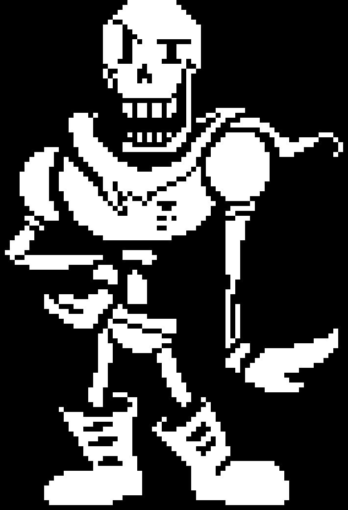
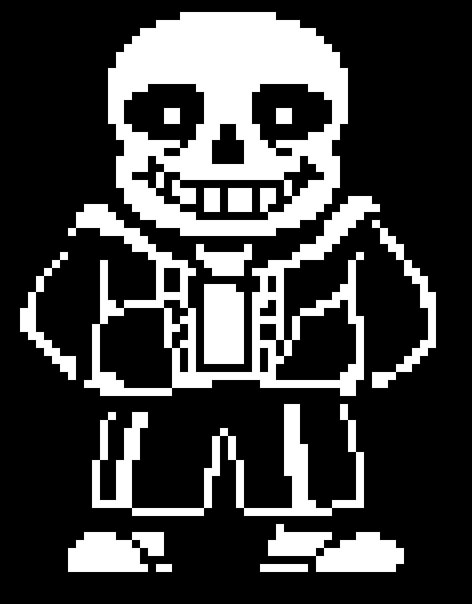
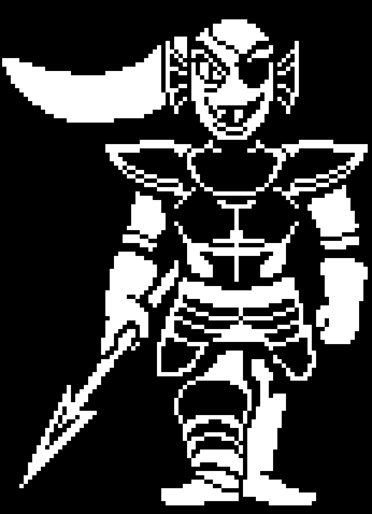
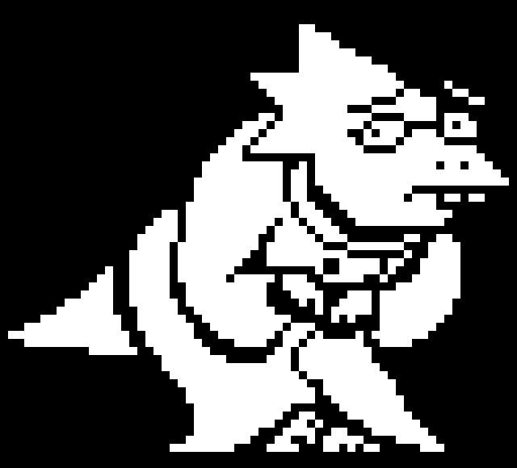
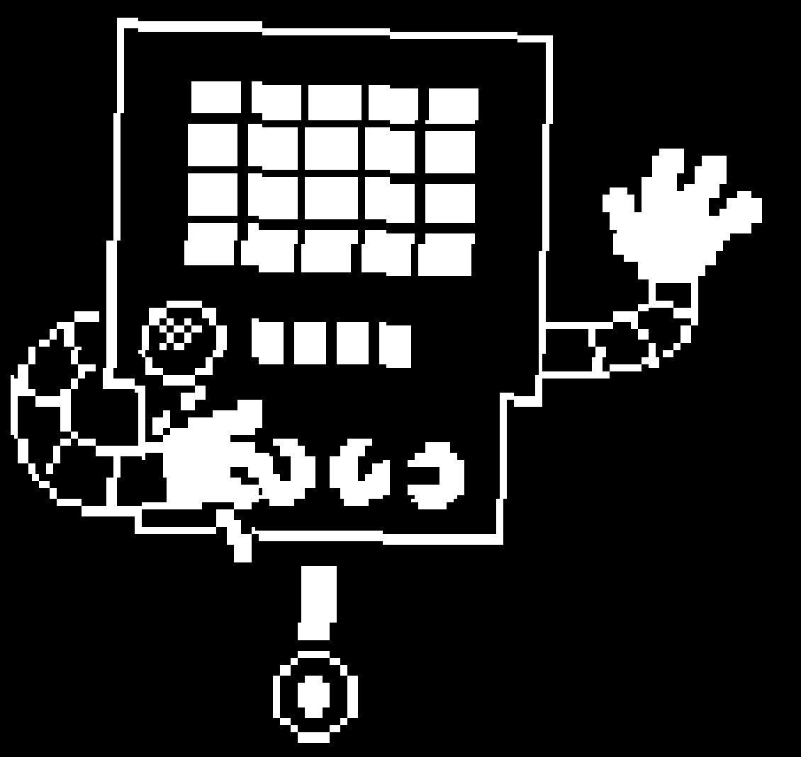
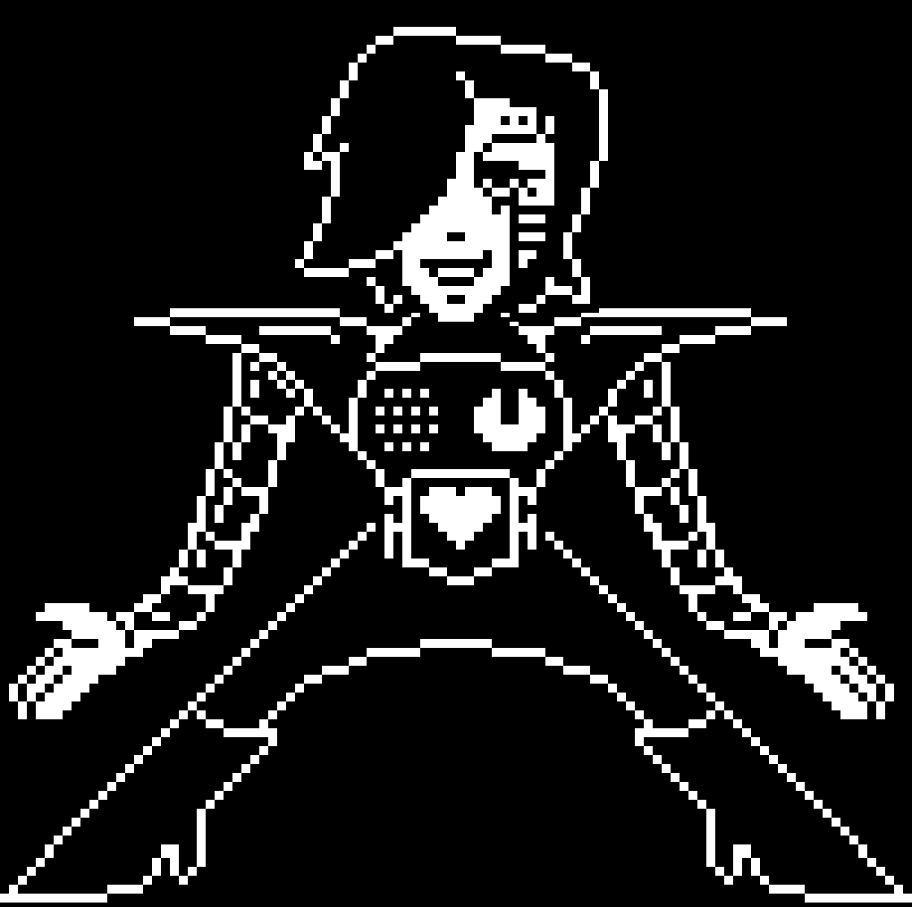
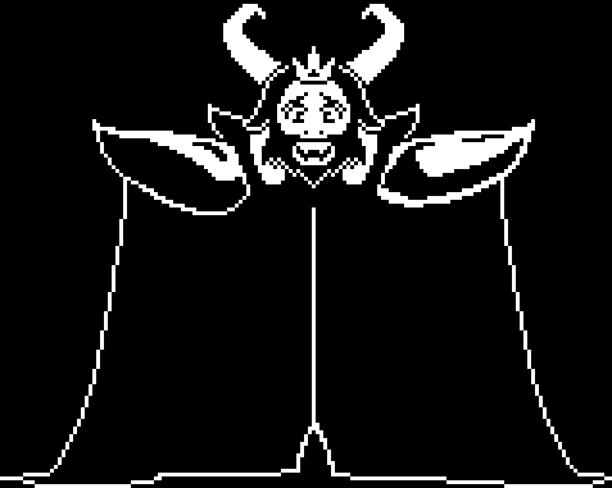

PERSONAGENS
* Durante UNDERTALE, o protagonista encontra vários personagens diferentes.
* Cada personagem tem seus próprios tratos, personalidade e importância para a história.
Toriel
* Toriel Dreemurr é a segunda personagem principal que o protagonista encontra em Undertale.
Ela salva o protagonista de Flowey e o guia pelas Ruínas, desejando protegê-lo e ensiná-lo a evitar os perigos do Subterrâneo.
Toriel é a antiga Rainha dos Monstros, ex-esposa de Asgore, mãe de Asriel, mãe adotiva do primeiro humano e a primeira chefe, pois guarda a saída das Ruínas.
* Toriel é uma Boss Monster cuja cabeça se assemelha a uma Cabra Núbia de pelo branco, estruturada com orelhas caídas e chifres minúsculos.
Ela tem um par de presas visíveis e cílios longos, e suas íris têm um tom vermelho-escuro.
Ela tem um corpo antropomórfico, com patas nas extremidades dos membros. Ela veste uma longa túnica roxa com mangas brancas e uma runa no peito.
Papyrus

* Papyrus é o irmão mais novo de Sans, um personagem importante e o segundo chefe em Undertale.
Papyrus quer se tornar um Guarda Real para ganhar fama e amigos.
Ele patrulha e prepara muitos dos quebra-cabeças da Floresta Snowdin na esperança de capturar um humano e alcançar seu objetivo.
* Papyrus é um esqueleto alto, talvez anatomicamente impreciso, com um crânio mais vertical e geométrico que o de seu irmão.
Sendo esquelético, muitas de suas expressões incorporam um sorriso cheio de dentes.
Ele tem olhos que aparecem às vezes quando está vivenciando emoções fortes.
Sans

* Sans é o irmão mais velho de Papyrus e um personagem importante em Undertale.
Ele aparece pela primeira vez na Floresta Snowdin depois que o protagonista sai das Ruínas.
Sans é o deuteragonista das rotas Neutra e Pacifista Verdadeira, nas quais ele fica de olho no protagonista durante todo o jogo.
Ele também é o chefe final da Rota Violenta no Corredor Final da Nova Casa.
* Sans aparece como um esqueleto relativamente baixo e barrigudo, com mãos como luvas.
Sans é sempre visto com um sorriso largo e dentuço no rosto.
Sans veste um moletom azul com capuz cinza, uma camiseta branca por baixo, shorts pretos com listras brancas e um par de chinelos.
Ele tem pontos brancos como pupilas em suas órbitas oculares pretas, que desaparecem quando ele está sério ou irritado.
Undyne

* Undyne é uma personagem principal e a terceira chefe em Undertale.
Undyne lidera a Guarda Real, que protege Asgore e patrulha o Subterrâneo para encontrar humanos.
Ela persegue o protagonista por toda a Waterfall.
* Undyne é um monstro-peixe antropomórfico. Ela tem escamas azuis e um longo rabo de cavalo vermelho.
Ela tem barbatanas vermelhas e azuis nas laterais da cabeça e um par de dentes afiados, amarelos e salientes.
Ela usa uma sombra vermelha e um tapa-olho sobre o olho esquerdo.
Ela também usa uma regata preta e calça jeans azul, mas estreia com uma armadura que varia em tons claros e escuros de cinza.
Seus olhos têm pupilas verticais pretas e esclera amarela.
Alphys

* Alphys é uma personagem principalque vive num laboratório no oeste de Hotland.
Ela é a atual Cientista Real, posição que lhe foi concedida por Asgore após o desaparecimento de seu antecessor.
Ela é uma personagem importante em Undertale e a única a não lutar contra o protagonista
* Alphys é um monstro reptiliano amarelo de altura semelhante à da protagonista.
Seu "cabelo" é projetado em pontas voltadas para a parte de trás de sua cabeça.
Ela normalmente usa óculos redondos e um jaleco branco. Seus óculos não cobrem seus cílios.
Mettaton


* Mettaton é um personagem principal e o quarto chefe de Undertale.
Ele é a única estrela de televisão do Underground.
Mettaton se apresenta como um robô de entretenimento em Hotland, embora mais tarde revele a verdade ao protagonista no final do Core.
* Mettaton aparece originalmente como uma caixa cinza, em grande parte retangular, com uma grade de 4x5 de luzes retangulares na parte superior.
Ele tem quatro mostradores na parte inferior do corpo e, na parte inferior, uma única perna que termina em uma roda.
Ele tem dois braços robóticos segmentados que terminam em luvas brancas.
* Após ter o interruptor em suas costas acionado na Rota Neutra ou Pacifista Verdadeiro,
Mettaton se transforma em Mettaton EX; um novo corpo que ele solicitou especialmente que Alphys fizesse para ele.
Nesta forma humanoide, ele tem cabelos pretos com uma longa franja que parece cobrir seu olho direito, "pele" pálida e segmentos de metal visíveis abaixo e acima do olho esquerdo.
Asgore

* Asgore Dreemurr é o Rei do Subterrâneo e seus habitantes, monstros.
Ele serve como o antagonista secundário de Undertale, planejando obter sete ALMAS para quebrar a barreira que prende todos no Subterrâneo.
No entanto, ele não é mau ou malicioso. Asgore é o ex-marido de Toriel, pai de Asriel, pai adotivo do primeiro humano e o penúltimo chefe da Rota Neutra.
* Asgore é um grande Monstro Chefe e o personagem principal mais alto de Undertale.
Asgore tem dois grandes chifres curvos, crina loiro-dourada, barba cheia loiro-dourada, pelo branco, orelhas longas, um focinho e um conjunto de presas visíveis.
Asgore usa uma pequena coroa de três pontas no topo da cabeça, ombreiras douradas, uma longa capa roxa que se arrasta levemente pelo chão, que ele frequentemente usa para cobrir seu corpo.